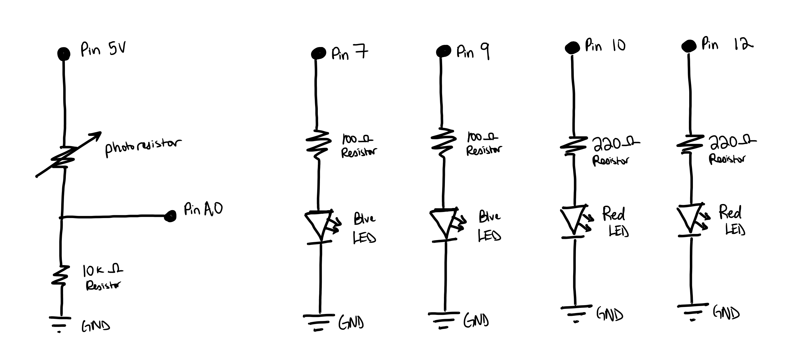
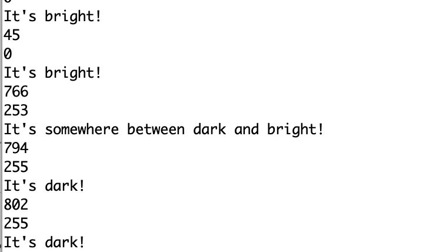
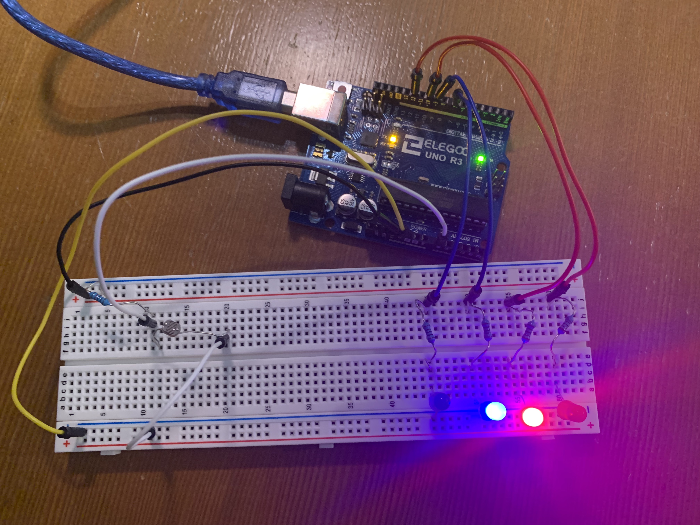

Anna's Assignment 3!

For this assignment, I had to use a sensor and a voltage divider to change outputs on the Arduino. Below is the documentation!
Schematic

Shown on the schematic are 6 pins on the arduino. These pins are 5V, A0, 9, 12, 10, and 7. Pin 5V is an outputing pin and is connected to a photoresistor, inputting pin A0, a 10k ohm resistor, and ground in a voltage divider configuration. Pins 9&12 and 7&10 are outputting pins and are individually connected to a resistor and an LED. Pins 9 and 12 are connected to a red LED and pins 7 and 10 are connected to a blue LED. I chose these colors as they correspond to lighting recommendations for different times of day. When it is night time and it’s dark outside, red tinted lights have less negative effects on sleep, so that LED will be on and the blue LED will be off, as blue light is shown to negatively affect sleep. When it is daytime and bright outside, the blue LED will be on and the red LED will be off.
The schematic also shows the values of the resistors. For Pins 9&12 and 7&10, I determined the resistance by using V=IR and using the resistors I had that matched closest. For the red LEDs, as it’s voltage drop is 1.8V, the voltage that is being supplied is 5V, and the target current for LEDs is 20 mA, the resistors needed to reach that target current have to have a resistance of 160 ohms. As I only had 100 and 220 ohm resistors, I opted for 220 ohms as 100ohms would exceed the recommended current maximum of 30mA. Using V=IR, the current is then 14.5 mA. For the blue LEDs, as its voltage drop is 3.2V, the resistance needed for 20 mA is 85 ohms. I opted to use an 100 ohm resistor for this one as I wanted the brightness of the LEDs to all be close to the same, and 220 ohms would have made the blue significantly dimmer. The calculated current in this case is 17mA. For pin 5V, I used a 10k ohm resistor on the other side of the voltage divider. This was based on the Adafruit Photocells informational document. As it described that higher resistance resistors would allow the photoresistor to be more sensitive to changes in low light, I decided to use a 10k ohm resistor as I am more able to control how dark the area is instead of how especially bright it is.
Code Snippet
int sensorValue; // initializes the sensor value
int sensorMin; // initializes minimum sensor value
int sensorMax; // initializes maximum sensor value
int Rvar = 10; // initializes the variable "Rvar" to represent pin 10
int Bvar = 9; // initializes the variable "Bvar" to represent pin 9
int Rconf = 12; // initializes the variable "Rconf" to represent pin 12
int Bconf = 7; // initializes the variable "Bconf" to represent pin 7
int Vread = A0; // initializes the variable "Vread" to represent pin A0
void setup() {
// method that sets up the arduino, ran once.
sensorValue = 0; // the sensor value
sensorMin = 1023; // minimum sensor value
sensorMax = 0; // maximum sensor value
Serial.begin(9600); // starts up the serial port to transmit data at 9600 bits per second.
pinMode(A0, INPUT); //sets pin A0 to be an inputting pin
pinMode(9, OUTPUT); //sets pin 9 to be an outputting pin
pinMode(12, OUTPUT); //sets pin 12 to be an outputting pin
pinMode(7, OUTPUT); //sets pin 7 to be an outputting pin
pinMode(13, OUTPUT); //sets pin 13 to be an outputting pin
// Calibration - sample code used from arduino built-in example "Calibration"
// determines the max and min expected values from a sensor (measured by Vread), so that unexpected circuit behavior is minimized.
// during calibration the user covers the sensor for a bit then allows the circuit to be exposed to the room lighting or a flashlight.
digitalWrite(13, HIGH); // turns the voltage level of pin 13 to high, turning on the built-in LED. Indicates calibration is in progress.
while (millis() < 5000) { // loops this section of the code during the first 5 seconds that the code is running.
sensorValue = analogRead(Vread); // reads the value of the pin that is measuring the voltage output of the circuit
Serial.println(sensorValue); // prints to the serial port the values being picked up by the sensor.
if (sensorValue > sensorMax) { // if the current value of sensorValue is bigger than sensorMax then it will run the following code
sensorMax = sensorValue; // records the current value of sensorValue as sensorMax.
}
if (sensorValue < sensorMin) { // if the current value of sensorValue is smaller than sensorMax then it will run the following code
sensorMin = sensorValue; // records the current value of sensorValue as sensorMin.
}
}
Serial.println("This is max"); // prints the phrase "This is max"
Serial.println(sensorMax); // prints the maximum value recorded during the calibration process.
Serial.println("This is min"); // prints the phrase "This is min"
Serial.println(sensorMin); // prints the minimum value recorded during the calibration process.
digitalWrite(13, LOW); //turns the voltage level of pin 13 to low, turning off the built-in LED. Indicates that calibration is over.
}
void loop() {
// method that runs main code continously repeating.
sensorValue = analogRead(Vread); // measures the voltage value of the pin corresponding to Vread
int sensVal = constrain(sensorValue, sensorMin, sensorMax); // restricts the values of the sensor to be between the max and min values recorded during calibration
int outVal = map(sensVal, sensorMin, sensorMax, 0, 255); // uses the map function to assign the possible values of voltage to values that can be assigned to LED.
//Serial.println(sensorValue);
//Serial.println(outVal);
// above is test code: prints the values of sensorValue and outVal to serial port
analogWrite(Rvar, abs(outVal)); // turns the voltage level of the pin correlated to "Bvar" to the value of outVal.
analogWrite(Bvar, abs((255 - outVal)/2) ); // turns the voltage level of the pin correlated to "Rvar" to the inverse value of outVal divided by 2.
// (i.e. if outVal is 0, "Rvar will be written to 128.)
if (outVal == 255 ) { // if outVal is 255, the following will be performed.
digitalWrite(Rconf, HIGH); // turns the voltage level of the pin correlated to "Rconf" to high.
digitalWrite(Bconf, LOW); // turns the voltage level of the pin correlated to "Bconf" to low.
Serial.println("It's dark!"); // prints the phrase "It's dark!" to the serial port
delay(1000); // wait for 1 second
} else if (outVal == 0) { // if outVal is 0, the following will be performed.
digitalWrite(Bconf, HIGH); // turns the voltage level of the pin correlated to "Bconf" to high.
digitalWrite(Rconf, LOW); // turns the voltage level of the pin correlated to "Rconf" to low.
Serial.println("It's bright!"); // prints the phrase "It's bright!" to the serial port
delay(1000); // wait for 1 second
} else { // if outVal is neither 0 nor 255, the following will be performed.
digitalWrite(Rconf, LOW); // turns the voltage level of the pin correlated to "Rconf" to low.
digitalWrite(Bconf, LOW); // turns the voltage level of the pin correlated to "Bconf" to low.
Serial.println("It's somewhere between dark and bright!"); // prints the phrase "It's somewhere between dark and bright!" to the serial port
delay(1000); // wait for 1 second
}
}
My code includes a setup method which runs once and prepares the pins on the Arduino for use by designating them as outputs/inputs, and configures the sensor to read values for the area it is in. There is also a loop method which runs repeatedly and tells the pins to change voltage based on sensor values, changing the brightness of the red and blue LEDs.
Before the setup method, 8 variables are initialized. These variables are sensorValue, sensorMin, sensorMax, Rvar, Bvar, Rconf, Bconf, and Vread. The first three variables aid in determining the maximum value the sensor should read in the environment it’s in. The last 5 variables assigns names to pins for future use.
The setup method first sets the sensorValue, sensorMin, and sensorMax variables to 0, the max, and the min readable values, respectfully. Then the serial port is set up to transmit data at 9600 bits per second. Then the pins used for the circuit are set up to be input and output pins. The set up method also includes a calibration section. Sample code here is drawn from the “Calibration” Arduino example. It determines the maximum and minimum values recorded by the attached sensor (in this case a photoresists) over a time period (here, 5 seconds). I then added statements that print the max and min to the serial port for debugging purposes.
The loop method first sets the sensorValue variable to read the Vread pin. It then uses the sensVal variable and the constrain method to restrict values that are used to ones that fit the range found in calibration. The map function is then used to map the values in sensVal to ones that can be used with LED, which are in the range of 0 to 255. The mapped value is set to outVal. The red and blue LEDs will then have their light strength set to a value corresponding to outVal. For blue, it’s the raw value of outVal. For red, it’s (255-outVal)/2. This means that when blue is at full strength, red is off, and when red is at full strength blue is off. I divided the red LED’s value by 2 as it was a bit too bright for my taste when testing it.
If outVal is 255 or 0, then the corresponding confirmation LED will light. The confirmation LED confirms that it is either maximum or minimum light. If outVal is 255, the red confirmation light will turn on, and if it’s 0, the blue one will turn on. A phrase indicating whether it’s bright or dark also prints to the serial port depending on outVal. If it’s not at max or min brightness, neither will light and the phrase “It's somewhere between dark and bright!” will print to the serial port.

The photo above shows what prints to the serial port when test code is in place. The phrases are still printed when test code is not in place.
Circuit Image and Operation GIF



The first image shows the circuit from above. The 1st gif shows the circuit behavior if the light sensed is at maximum according to calibration. The second gif shows the circuit behavior if the light sensed is at minimum according to calibration.
In this circuit there are 7 wires connected to the Arduino. One is connected each to ground, pin 12, 10, 9, 7, 5V, and A0. The one connected to ground is connected to the negative row of the breadboard. For pins 12, 10, 9, and 7, the wire connects to a resistor, which is then connected to the LED it corresponds to. The blue wires connect to the blue LEDs and the red wires connect to the red LEDs. Pin 5V is connected to a wire going to the positive row of the breadboard. Then a resistor is connected to the positive row which is also connected to a wire leading to the A0 pin. Then the photoresists is connected, which is connected to the negative row of the breadboard.